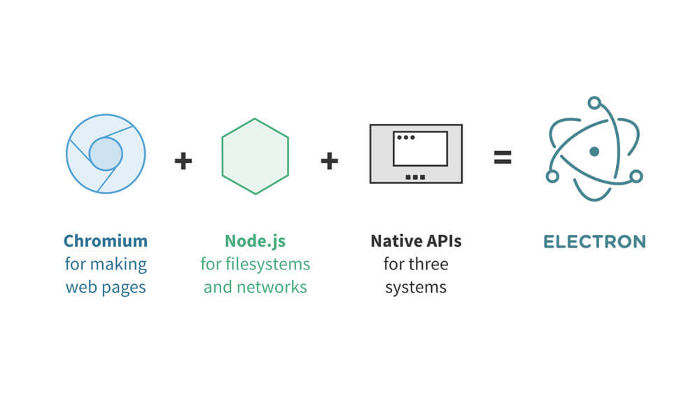
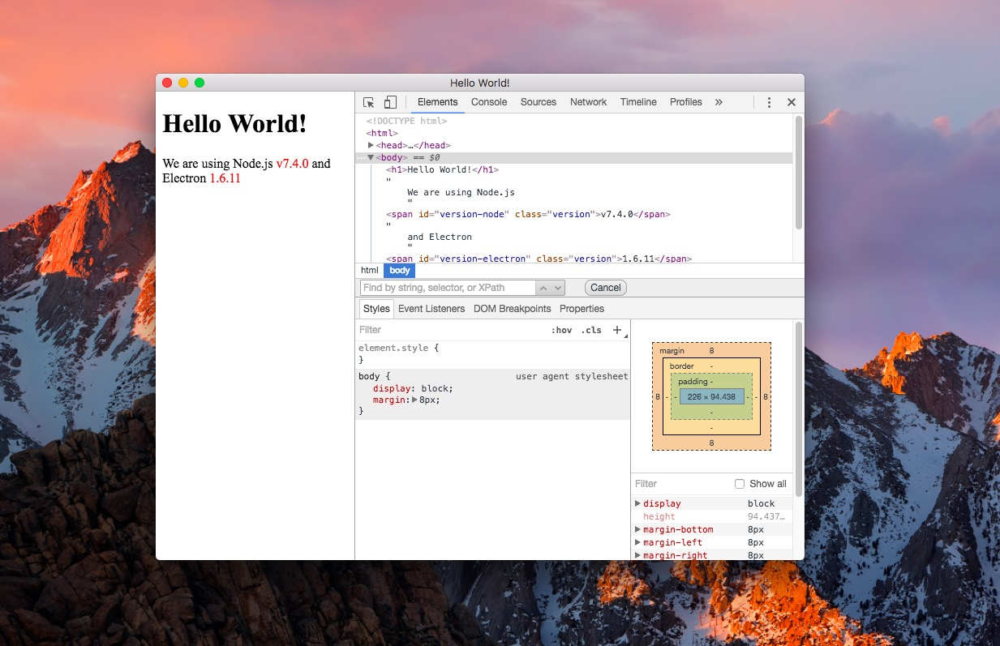
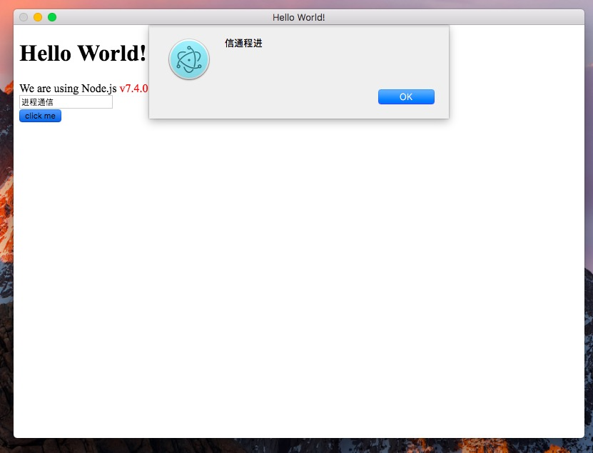

简介 🔗
Electron 是一个可以使用 Web 技术如 JavaScript、HTML 和 CSS 来创建跨平台原生桌面应用的框架。借助 Electron，我们可以使用纯 JavaScript 来调用丰富的原生 APIs。
Electron用 web 页面作为它的 GUI，而不是绑定了 GUI 库的 JavaScript。它结合了 Chromium、Node.js 和用于调用操作系统本地功能的 APIs（如打开文件窗口、通知、图标等）。

现在已经有很多由 Electron 开发应用，比如 Atom 、 Insomnia 、 Visual Studio Code 等。查看更多使用 Electron 构建的项目可以访问 Apps Built on Electron
安装 🔗
安装 electron 之前，需要安装 Node.js。如果没有安装，推荐使用 nvm 等 Node.js 版本管理工具进行安装。
然后建议修改 electron 的源为国内源：
$ export ELECTRON_MIRROR="https://npm.taobao.org/mirrors/electron/"
不然会出现如下错误：
Error: connect ETIMEDOUT 54.231.50.42:443
at Object.exports._errnoException (util.js:1016:11)
at exports._exceptionWithHostPort (util.js:1039:20)
at TCPConnectWrap.afterConnect [as oncomplete] (net.js:1138:14)
安装 electron：
$ npm install electron -g
进程 🔗
Electron 的进程分为主进程和渲染进程。
主进程 🔗
在 electron 里面，运行 package.json 里面 main 脚本的进程成为主进程。主进程控制整个应用的生命周期，在主进程中可以创建 Web 形式的 GUI，而且整个 Node API 是内置其中。
渲染进程 🔗
每个 electron 的页面都运行着自己的进程，称为渲染进程。
主进程与渲染进程的联系及区别 🔗
主进程使用 BrowserWindow 实例创建页面。每个 BrowserWindow 实例都在自己的渲染进程里运行页面。当一个 BrowserWindow 实例被销毁后，相应的渲染进程也会被终止。
主进程管理所有页面和与之对应的渲染进程。每个渲染进程都是相互独立的，并且只关心他们自己的页面。
在 electron 中，页面不直接调用底层 APIs，而是通过主进程进行调用。所以如果你想在网页里使用 GUI 操作，其对应的渲染进程必须与主进程进行通讯，请求主进程进行相关的 GUI 操作。
在 electron 中，主进程和渲染进程的通信主要有以下几种方式：
- ipcMain、ipcRender
- Remote 模块
进程通信将稍后详细介绍。
打造第一个 Electron 应用 🔗
以下所有代码可以在 https://github.com/nodejh/electron-quick-start 找到。
一个最简单的 electron 应用目录结构如下：
electron-demo/
├── package.json
├── main.js
└── index.html
package.json 与 Node.js 的完全一致，所以我们可以使用 npm init 来生成。然后将 "main": "index.js" 修改为 "main": "main.js"。之所以命名为 main.js，主要是为了与主进程这个概念对应。
main.js 🔗
创建 main.js 文件并添加如下代码：
const electron = require('electron');
const {
app, // 控制应用生命周期的模块
BrowserWindow, // 创建原生浏览器窗口的模块
} = electron;
// 保持一个对于 window 对象的全局引用，如果不这样做，
// 当 JavaScript 对象被垃圾回收， window 会被自动地关闭
let mainWindow;
function createWindow() {
// 创建浏览器窗口。
mainWindow = new BrowserWindow({width: 800, height: 600});
// 加载应用的 index.html。
// 这里使用的是 file 协议，加载当前目录下的 index.html 文件。
// 也可以使用 http 协议，如 mainWindow.loadURL('http://nodejh.com')。
mainWindow.loadURL(`file://${__dirname}/index.html`);
// 启用开发工具。
mainWindow.webContents.openDevTools();
// 当 window 被关闭，这个事件会被触发。
mainWindow.on('closed', () => {
// 取消引用 window 对象，如果你的应用支持多窗口的话，
// 通常会把多个 window 对象存放在一个数组里面，
// 与此同时，你应该删除相应的元素。
mainWindow = null;
});
}
// Electron 会在初始化后并准备
// 创建浏览器窗口时，调用这个函数。
// 部分 API 在 ready 事件触发后才能使用。
app.on('ready', createWindow);
// 当全部窗口关闭时退出。
app.on('window-all-closed', () => {
// 在 macOS 上，除非用户用 Cmd + Q 确定地退出，
// 否则绝大部分应用及其菜单栏会保持激活。
if (process.platform !== 'darwin') {
app.quit();
}
});
app.on('activate', () => {
// 在 macOS 上，当点击 dock 图标并且该应用没有打开的窗口时，
// 绝大部分应用会重新创建一个窗口。
if (mainWindow === null) {
createWindow();
}
});
关于 app 和 BrowserWindow 对象和实例的更多用法可参考 electron 的文档：
index.html 🔗
然后编辑需要展示的 index.html：
<!DOCTYPE html>
<html>
<head>
<meta charset="utf-8">
<title>Hello World!</title>
<style media="screen">
.version {
color: red;
}
</style>
</head>
<body>
<h1>Hello World!</h1>
We are using Node.js
<span id="version-node" class="version"></span>
and Electron
<span id="version-electron" class="version"></span>
<script type="text/javascript">
console.log('process: ', process);
var versionNode = process.version;
var versionElectron = process.versions['electron'];
document.getElementById('version-node').innerText = versionNode
document.getElementById('version-electron').innerText = versionElectron
</script>
</body>
</html>
在这个例子中，我们显示出了 electron 使用的 Node.js 版本和 electron 的版本。index.html 跟网页的 HTML 一摸一样，只是多了一些 electron 的全局对象。
运行 🔗
因为前面已经全局安装了 electron，所以我们可以使用 electron 命令来运行项目。在 electron-demo/ 目录里面运行下面的命令：
$ electron .
然后会弹出一个 electron 应用客户端，如图所示：

因为在主进程中启用了开发模式 mainWindow.webContents.openDevTools()，所以默认启动开发者工具。
如果是局部安装的 electron，即 npm install --save electron，则可以运行下面的命令来启动应用：
$ ./node_modules/.bin/electron .
进行通信 🔗
对于 electron 来说，主进程和渲染进程直接的通信是必不可少的。
前面提到过 electron 进程间的通信的方式主要有两种，一种是用于发送消息的 ipcMain 和 ipcRenderer 模块，一种用于 RPC 的 remote 模块。
现在假设一个业务场景，用户在页面中输入文本消息，渲染进程将消息发送给主进程，主进程处理后将处理结果返回给页面。为了方便起见，主进程的处理就假设为翻转文本。当然，这个功能在前端完全可以实现，这里只是为了演示进程通信。
ipcMain 和 ipcRenderer 🔗
首先在渲染进程中添加一个输入框和一个按钮，并实现点击按钮获取输入框的内容。然后使用 ipcRenderer 发送消息。主进程接收到消息并处理之后，会返回处理结果。所以渲染进程中还需要接收主进程的消息。
修改 index.html，添加下面的代码：
<!-- 在 body 部分添加一个输入框和按钮 -->
<div>
<input type="text" id="message" name="" value="">
<br/>
<button type="button" id="button" name="button">click me</button>
</div>
<script type="text/javascript">
// ...
// 添加下面的代码。
// 引入 ipcRenderer 模块。
var ipcRenderer = require('electron').ipcRenderer;
document.getElementById('button').onclick = function () {
var message = document.getElementById('message').value;
// 使用 ipcRenderer.send 向主进程发送消息。
ipcRenderer.send('asynchronous-message', message);
}
// 监听主进程返回的消息
ipcRenderer.on('asynchronous-reply', function (event, arg) {
alert(arg);
});
</script>
接下来在主进程中接收渲染进程的消息，并进行处理（翻转字符串），然后将处理结果发送给主进程。修改 main.js 如下：
//...
// 监听渲染进程发送的消息
ipcMain.on('asynchronous-message', (event, arg) => {
const reply = arg.split('').reverse().join('');
console.log('reply: ', reply);
// 发送消息到主进程
event.sender.send('asynchronous-reply', reply);
});
然后重新运行项目。在页面的输入框内输入字符，点击按钮，就能弹出如下的弹出框，说明渲染进程与主进程通信成功：

remote 🔗
remote 模块提供了一种在渲染进程（网页）和主进程之间进行进程间通讯（IPC）的简便途径。
使用 remote 模块，我们可以很方便地调用主进程对象的方法，而不需要发送消息。
在 index.html 的 <script> 标签中添加如下代码：
// 引入 remote 模块
var remote = require('electron').remote;
// 获取主进程中的 BrowserWindow 对象
var BrowserWindow = remote.BrowserWindow;
// 创建一个渲染进程
var win = new BrowserWindow({ width: 200, height: 150 });
win.loadURL('http://nodejh.com');
然后使用 ctr + r 组合键刷新应用，就会看到创建出的一个新窗口。
打包 🔗
Electron 应用开发完成之后，还需要将其打包成对应平台的客户端。常用的打包工具有 electron-packager 和 asar 。
这里以 electron-packager 为例。首先全局安装 electron-packager：
$ npm install electron-packager -g
然后在项目中安装 electron：
$ npm install electron --save-dev
然后打包：
$ electron-packager . electron-demo
总结 🔗
本文首先对 electron 做了简单的介绍，然后讲解了 electron 进程的概念，其进程包括主进程和渲染进程。然后创建了一个简单的 electron 应用，并通过实现一个简单的应用场景，对 electron 进程间的通信做了实践。总体来说，使用 electron 创建桌面客户端的开发体验跟写 Node.js 和网页差不多。但本文对内置模块比如 app、ipcMain、ipcRender、remote 等的介绍比较粗浅，涉及到一些内置模块的使用，还需要继续查询 electron 的 官方文档 ，只有实践越多，才能越熟悉。
–